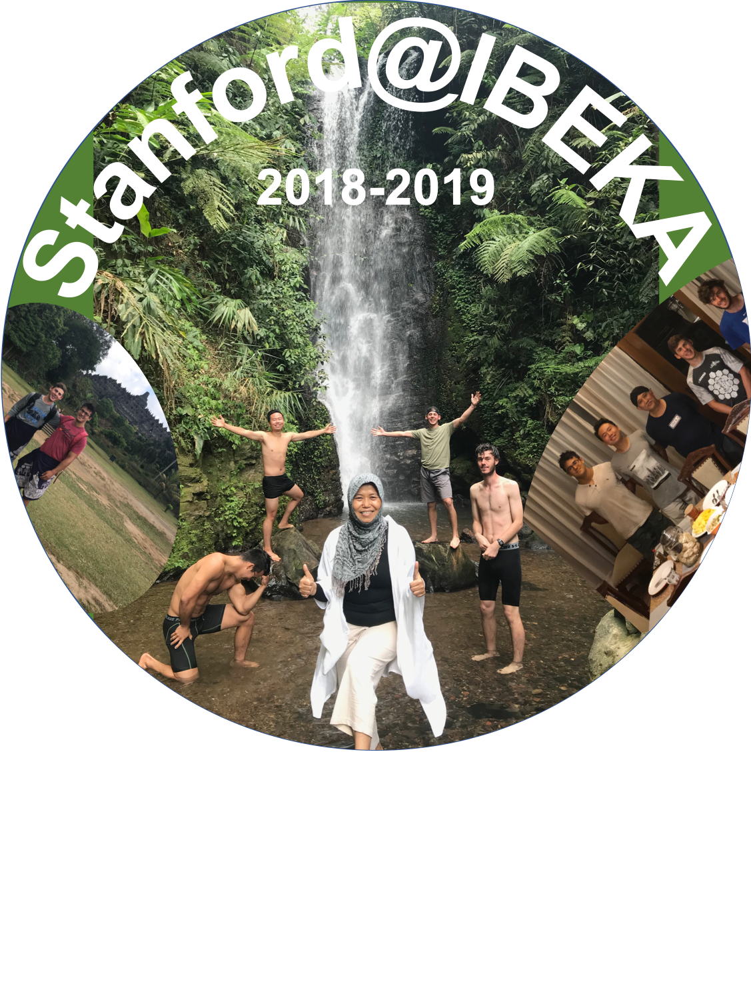

IBEKA RMS
Creating a remote monitoring system for microhydro generators. Check out our blog here.

I'm working this summer as a member of Stanford Engineers for a Sustainable World. Our group is working on a remote monitoring system for micro-hydro generators in rural villages in Indonesia. This is Stanfords fifth year working with IBEKA (People Centered Business and Economic Initiative) to design and implement the monitoring system for locations in Sumba and Mt. Ciptagelar. I worked on a PCB that monitors plant voltage, current, and frequency, and publishes it publicly online through a dual device system. The devices communicate with LoRa, and the second device is positioned in a place with 2G network, uploading data to our cloud via a Particle Electron.

Zach and I are in Indonesia for summer of 2019, based in Jakarta but traveling to different areas to learn more about this area and to test/implement our systems. You can read more about the details on my blog!
